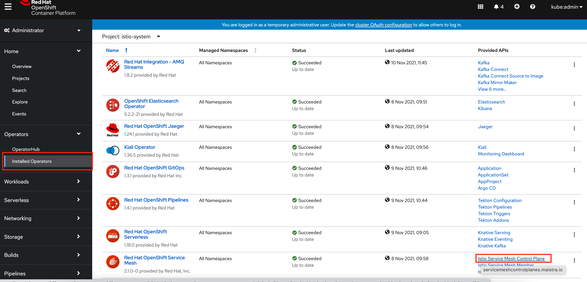
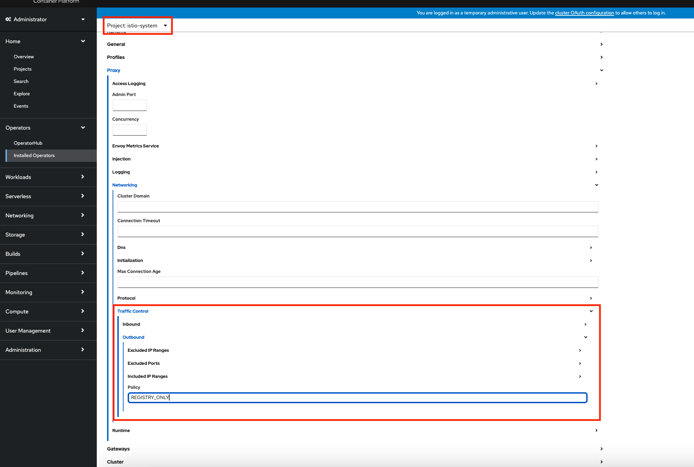
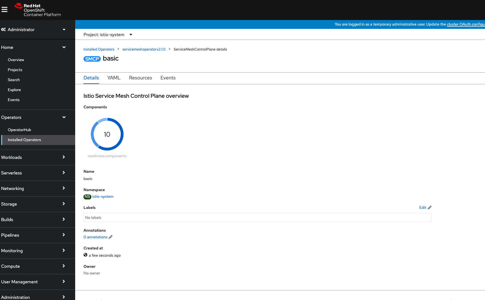

Setup & Installation
You can complete this tutorial using a local Minikube environment, or you can use an OpenShift 4 cluster where you have administrator access. OpenShift Local can provide access to a local OpenShift 4 cluster if you’d like to use OpenShift but don’t have access to a hosted environment.
Minikube Setup
| If you’re using OpenShift instead of Minikube skip ahead to the Install Istio section and select the OpenShift tab. |
The following CLI tools are required for running the exercises in this tutorial. Please have them installed and configured before you get started with any of the tutorial chapters.
| Tool | macOS | Fedora | windows |
|---|---|---|---|
|
|||
|
|
||
|
|||
Minikube v1.29.0 |
|||
|
|||
|
|||
|
|||
|
Download Tutorial Sources
Before we start setting up the environment, let’s clone the tutorial sources and set the TUTORIAL_HOME environment variable to point to the root directory of the tutorial:
git clone https://github.com/redhat-scholars/istio-tutorial istio-tutorialexport TUTORIAL_HOME="$(pwd)/istio-tutorial"cd $TUTORIAL_HOMEInstall Minikube
If the bin/ directory already exists in the $TUTORIAL_HOME location, replace the mkdir bin && cd bin with cd bin in the steps below.
|
mkdir bin && cd binchmod +x minikubechmod +x kubectlcd ..mkdir bin && cd binchmod +x minikubechmod +x kubectlcd ..mkdir bin && cd bincd ..And then set environment variables:
export MINIKUBE_HOME=$TUTORIAL_HOME;
export PATH=$MINIKUBE_HOME/bin:$PATH
export KUBECONFIG=$MINIKUBE_HOME/.kube/config
export KUBE_EDITOR="code -w"set MINIKUBE_HOME=%TUTORIAL_HOME%
set PATH=%MINIKUBE_HOME%/bin:%PATH%
set KUBECONFIG=%MINIKUBE_HOME%/.kube/config
set KUBE_EDITOR="code -w"Start Minikube
There are series of commands as steps that allows you get started with minikube. The following section shows how to start minikube with minimal and required configurations:
The profile istio-devnation is created to run the tutorial:
Having minikube installed and in your PATH, then run:
MacOS
minikube start --memory=8192 --cpus=3 --kubernetes-version=v1.26.1 --vm-driver=virtualbox -p istio-devnationLinux
minikube start --memory=8192 --cpus=3 --kubernetes-version=v1.26.1 --vm-driver=kvm2 -p istio-devnationWindows:
minikube start --memory=8192 --cpus=3 --kubernetes-version=v1.26.1 --vm-driver=hyperv -p istio-devnationAnd the output must be something similar like:
😄 [istio-devnation] minikube v1.20.0 on Darwin 11.3
✅ Created a new profile : istio-devnation
✅ minikube profile was successfully set to istio-devnation
😄 [default] minikube v1.29.0 on Darwin 11.3
✨ Selecting 'virtualbox' driver from user configuration (alternates: [hyperkit])
🔥 Creating virtualbox VM (CPUs=2, Memory=8192MB, Disk=50000MB) ...
🐳 Preparing Kubernetes v1.26.1 on Docker '20.10.6' ...
▪ apiserver.enable-admission-plugins=LimitRanger,NamespaceExists,NamespaceLifecycle,ResourceQuota,ServiceAccount,DefaultStorageClass,MutatingAdmissionWebhook
🚜 Pulling images ...
🚀 Launching Kubernetes ...
⌛ Waiting for cluster to come online ...
🏄 Done! kubectl is now configured to use "istio-devnation"Finally configure to use minikube internal docker as docker host:
eval $(minikube docker-env -p istio-devnation)To run OpenShift4, you need to have one provisioned using try.openshift.com or can use any existing OpenShift4 cluster. Once you have your cluster, you can download the latest OpenShift client(oc) from here and add to your path.
oc version
You can check the OpenShift version using:
oc versionThe output should show oc version >=4.7:
Client Version: 4.7.0-202102130115.p0-c66c03f
Kubernetes Version: v1.26.1Then login into the OpenShift cluster using oc login
Istio Installation
#!/bin/bash
# Mac OS:
curl -L https://github.com/istio/istio/releases/download/1.9.4/istio-1.9.4-osx.tar.gz | tar xz
# Fedora/RHEL:
curl -L https://github.com/istio/istio/releases/download/1.9.4/istio-1.9.4-linux-amd64.tar.gz | tar xz
# Windows
curl -L https://github.com/istio/istio/releases/download/1.9.4/istio-1.9.4-win.zip
# Both:
cd istio-1.9.4
export ISTIO_HOME=$(pwd)
export PATH="$ISTIO_HOME/bin:$PATH"
cd $TUTORIAL_HOMEistioctl manifest apply --set profile=demo --set values.global.proxy.privileged=true --set meshConfig.outboundTrafficPolicy.mode=REGISTRY_ONLY✔ Istio core installed
✔ Istiod installed
✔ Egress gateways installed
✔ Ingress gateways installed
✔ Addons installed
✔ Installation completekubectl config set-context $(kubectl config current-context) --namespace=istio-system
istio-demo.yaml enables policy enforcement by default which is required in some sections of the tutorial. Please refer to https://istio.io/docs/tasks/policy-enforcement/enabling-policy/ if you are not using this file.
|
Wait for Istio’s components to be ready
kubectl get pods -wNAME READY STATUS RESTARTS AGE
istio-egressgateway-fdf8f9b9b-xg68c 1/1 Running 0 14m
istio-ingressgateway-ccc594cb5-ppvrf 1/1 Running 0 14m
istiod-69bc87d9d4-kcfnf 1/1 Running 0 14mIstio is supported in OpenShift by Red Hat OpenShift Service Mesh operator. This section assumes you have an OpenShift 4.9+ cluster and an account with administrator access.
| The steps below provide a summary of the installation steps for Red Hat OpenShift Service Mesh. Detailed instructions can be found in the OpenShift Documentation. |
Using Istio on OpenShift requires the installation of four operators, configuring a Mesh Control Plane, and enrolling namespaces in the mesh using a Mesh Member Roll. The required operators are:
-
OpenShift Elastic Search Operator
-
OpenShift distributed tracing platform (based on Jaeger)
-
Kiali Operator
-
OpenShift Service Mesh Operator
Install the operators by following these steps:
-
Login to your OpenShift cluster’s console as user with administrator permissions, e.g the kubeadmin account.
-
Choose the Administrator perspective from the side-menu.
-
Expand the Operators section and select Operator Hub.
-
Check the Red Hat box under the Source section to filter out community operators.
-
Search for and install the OpenShift Elastic Search Operator. Accept the default installation parameters when prompted.

-
Repeat the previous steps to install the following operators:
-
OpenShift distributed tracing platform
-
Kiali
-
OpenShift Service Mesh
-
It’s recommended, but optional, to install the Web Terminal operator to simplify running commands later in this guide. You can use the OpenShift (oc) CLI and kubectl directly from your development machine if you prefer. The OpenShift CLI can be downloaded using the Command line tools link from the help icon in the top-right of the OpenShift console.
|
Once complete select Installed Operators from the side-menu in the OpenShift console and verify the are listed as installed. Your list should be similar to the list shown in the following screenshot.

To configure Istio we need to create a namespace where the control plane components can be deployed. To create the istio-system namespace:
-
Expand the Home section and select Projects.
-
Click the Create Project button in the top-right of the screen. A modal will appear in the center of the screen.
-
Enter
istio-systemin the Name and click Create in the modal.

You can now configure and deploy Istio:
-
Expand the Operators section and select Installed Operators.
-
Click the Istio Service Mesh Control Plane item in the Provided APIs column next to the Red Hat Service Mesh Operator
 -
Click the Create ServiceMeshControlPlane button.
-
Leave the Istio configuration parameters with the default values except
Proxy > Networking > Traffic Control > Outbound > Policywhich needs to be changed toREGISTRY_ONLYto prevent traffic going outside of the mesh. -
Scroll down and click Create to create the Istio Control Plane.
-
Click on the newly listed
basicitem in the ServiceMeshControlPlane list. -
Wait until all Istio components are shown as ready.

Lastly, enroll services from a namespace in the Mesh using the Istio Service Mesh Member Roll:
-
Expand the Home section and select Projects.
-
Click the Create Project button in the top-right of the screen. A modal will appear in the center of the screen.
-
Enter
tutorialin the Name and click Create in the modal. -
Select the Operators > Installed Operators from the side-menu.
-
Select the Istio Service Mesh Member Roll option from the Provided APIs column.

-
Click the Create ServiceMeshMemberRoll button.
-
Choose the YAML View and add the
tutorialnamespace to thespec.memberslist:apiVersion: maistra.io/v1 kind: ServiceMeshMemberRoll metadata: name: default namespace: istio-system spec: members: - tutorial -
Scroll down and click the Create button.
Congratulations! You’ve deployed Istio and enrolled services deployed in the tutorial project in the mesh.
It is important that after you finish with the installation, all the required pods are deployed in istio-system namespace:
kubectl get pods -w -n istio-systemNAME READY STATUS RESTARTS AGE
grafana-77c8d875c6-blrtn 2/2 Running 0 57m
istio-egressgateway-69f57c4784-8ph2c 1/1 Running 0 57m
istio-ingressgateway-fb75588cc-fvmzg 1/1 Running 0 57m
istiod-basic-6d6cb9d7bb-8dvl7 1/1 Running 0 58m
jaeger-c78d79786-hmm7q 2/2 Running 0 57m
kiali-774f655f6c-sv7nv 1/1 Running 0 18m
prometheus-9db548fb6-vhwhc 3/3 Running 0 57m